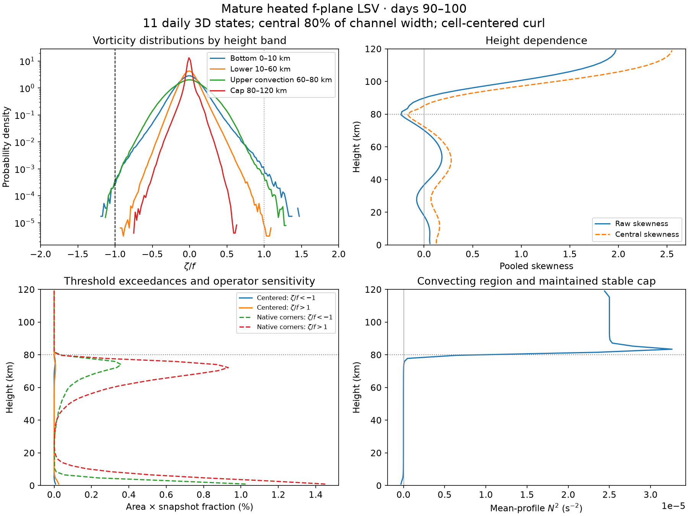
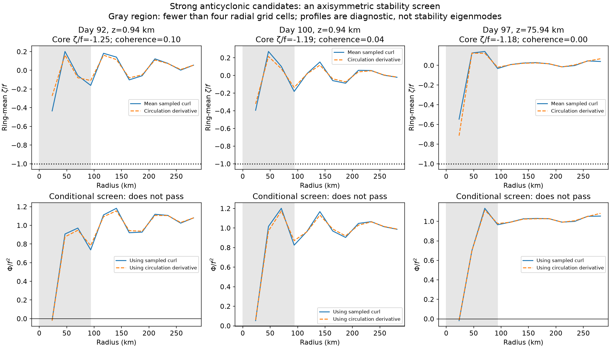
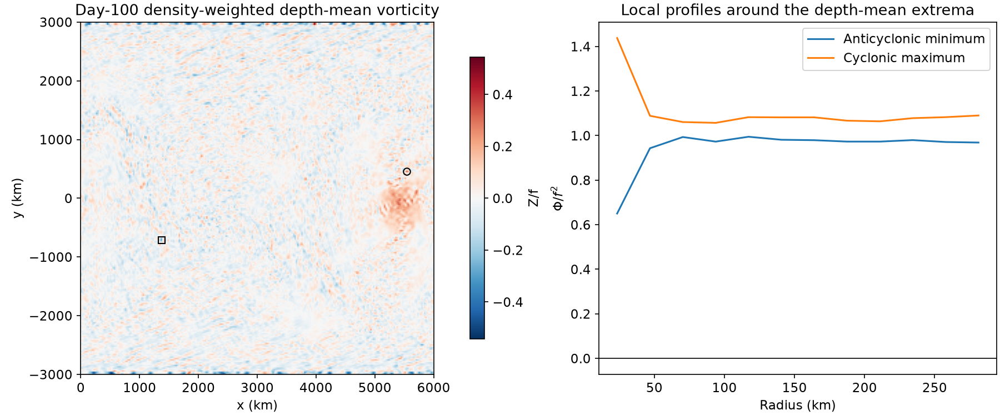
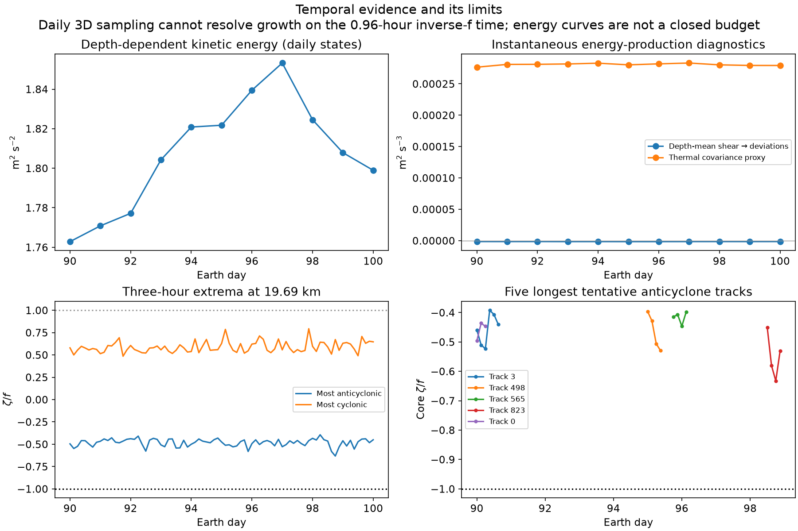

Completed-run audit · Unity · 15 November 2026
Does centrifugal instability explain the preferred vortex sign?
The mature heated f-plane run reaches ζ/f < −1 locally, but this audit finds no resolved anticyclonic circulation profile that passes the declared centrifugal-instability screen. These saved fields do not establish centrifugal destruction as the explanation for the surviving cyclone.
We examined days 90–100 of the existing late_heated continuation: 11 daily full 3D states and 81 three-hourly movie frames. This is the original dry, capped anelastic configuration, with constant positive f, on a 256 × 256 × 64 grid spanning 6,000 × 6,000 × 120 km. No new simulation or change of forcing was made. With x east, y north and z up, positive ζ is cyclonic here.
The same LSV, at three depths
Days 90–100; heights 19.69, 59.06 and 100.31 km. Top row: vertical vorticity. Bottom row: passive tracer. This is the already published same-run movie, with fixed scales and its labeled tracer contrast mapping; no field values or movie frames were changed. Movie provenance.
1. Vorticity distributions depend strongly on height and curl placement

The positive tail extends farther than the negative tail near the bottom. Skewness is modestly positive in the lower convecting region, becomes negative near the cap base, and varies substantially through the cap. This is not a uniform column-wide preference in the small-scale vorticity distribution.
| Height band | Raw skewness | Centered ζ/f < −1 | Native-corner ζ/f < −1 |
|---|---|---|---|
| 0–10 km | +0.060 | 0.00188% | 0.394% |
| 10–60 km | +0.105 | 0.00000645% | 0.0179% |
| 60–80 km | −0.042 | 0.00196% | 0.203% |
| 80–120 km cap | −0.137 | 0% | 0.000181% |
The bottom-band threshold count changes by about a factor of 210 between native-corner and cell-centered curl. Centering averages neighboring curls, so it attenuates grid-scale extrema. This is operator sensitivity, not a resolution-convergence test or proof that the native extrema are unphysical. A sharp-looking negative tail in the movie diagnostic cannot by itself establish an instability cutoff.
2. Pointwise negative absolute vorticity is not an unstable vortex profile
For approximately axisymmetric horizontal circulation, we evaluated Φ = (f + 2V/r)(f + ζ), using both sampled ring-mean curl and an independent circulation derivative. A point with ζ < −f is insufficient: both factors and the radial circulation matter.

0 of 1,576 height–time candidates passed. This count samples up to three strongest rotation-dominated anticyclonic extrema per height and daily state; it is not 1,576 independent vortex lifetimes. Across the tested radii, the smallest Φ/f² was +0.737 from sampled curl and +0.757 from the circulation derivative. Thus rejection was not merely caused by the axisymmetry requirement.
The predeclared screen requires both estimates below −0.01 at two adjacent radii between 4 and 10 horizontal cells (93.75–234.375 km), plus an axisymmetric azimuthal-energy fraction of at least 0.5. It is a conditional inviscid, axisymmetric, barotropic screen—not a growing-mode calculation for this stratified, viscous, convecting flow. Smaller-scale or non-axisymmetric instabilities remain untested.

3. No resolved growth-and-breakdown sequence

The daily regional transfer diagnostic from horizontal depth-mean flow to deviations stays slightly negative, between −1.55 and −1.41 × 10−6 m² s−3, while the thermal covariance proxy is positive and much larger. This does not show net extraction of depth-mean kinetic energy by disturbances in the sampled averages. Local positive extraction could still be hidden by the average.
These terms are not a closed perturbation-energy budget. Transport through the selected region, pressure, diffusion and numerical contributions have not all been reconstructed. The positive thermal term cannot be relabeled as centrifugal growth. Daily 3D output is too sparse to resolve growth on the approximately 0.96-hour inverse-f scale (inertial period 6.06 hours). Three-hourly single-level velocities cannot supply the missing 3D evolution.
What this changes about the explanation
The near-bottom positive-tail preference is qualitatively consistent with the asymmetry discussed by Favier, Silvers & Proctor (2014), §IV.E and Fig. 11. Their Boussinesq fixed-temperature experiment differs from this capped anelastic run. Here, the radial test does not substantiate resolved centrifugal breakup, and threshold counts depend strongly on curl placement.
We cannot conclude that anticyclones are centrifugally unstable and that this is the whole story. Asymmetric generation by convection, transfers between depth-dependent and depth-mean flow, and small-scale regularization remain distinguishable possibilities. This mature window also cannot determine how the LSV first acquired its sign.
The useful next causal test would be a short, deliberately sampled interval of this same f-plane configuration with native vorticity tendencies and high-cadence 3D disturbance energetics around actual strong anticyclonic events. That is a proposed follow-up, not an experiment launched by this audit.
Methods, checks and measured results
Unity analysis job 1815620 completed in 32 elapsed seconds using one CPU; a separate figure job corrected a caption to say “cell-centered curl.” Checks passed for periodic differentiation, uniform flow, solid-body vortices, a Gaussian unstable annulus at the accepted radii, rotation-sign covariance, native/centered curl equivalence and agreement with saved movie slices. These checks validate the implemented diagnostic operations, not the physical mechanism.
The first analytic check attempt failed because it applied the Gaussian error tolerance inside four cells, where the science screen already excluded profiles. The unchanged tolerance was applied to the predeclared 4–10-cell radii; both errors are recorded in validation results. No simulation was rerun.
- Method and analysis source
- Analysis report and input checksums · All candidate summaries · Selected radial profiles · Depth-mean profiles
- Energy diagnostics · Tentative tracks · Figure checksums · Publication provenance
All scientific calculations and rendering stayed on Unity. Only finished publication assets were transferred for upload; raw fields remain on Unity.